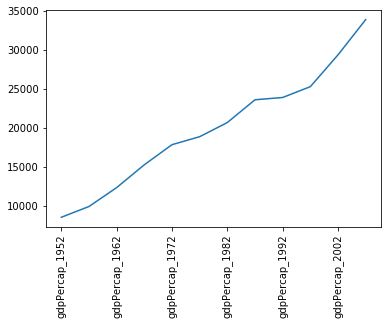

Pandas Essential
Last updated on 2025-04-15 | Edit this page
Estimated time: 0 minutes
Overview
Questions
- How can I work with spreadsheet style datasets?
Objectives
- Learn to load csv data, and obtain simple analyses of the data
- Learn how to index data arrays using column/row labels
- Learn how to mask data to remove unwanted values
- Learn how to plot data directly from pandas
This library is based on the numpy library that we discuss in a previous lesson. It provides python users with a new object that allows us to work with “relational” or “labelled” data in an easy way. It provides similar access to data loaded from databases or spreadsheets as those found in languages like R.
Pandas is designed more for data science than pure numerical analysis but the required tools can easily be combined together. In addition, the library provides input/output tools that allow the opening and saving of data from MS Excel, CSV or HDF5 files.
The library is usually imported as pd:
Later we will need to plot data - so the matplotlib library should be loaded:
We will be working with data in the
data/gapminder_gdp_europe.csv file. Open this with a text
editor and look at the data layout.
The data within this file is organised much as you’d expect the data
within a spreadsheet. The first row of the file contains the headers for
each of the columns. The first column contains the name of the
countries, while the remaining columns contain the GDP values for these
countries for each year. Pandas has the read_csv function
for reading structured data such as this, which makes reading the file
easy:
Here we specify that the country column should be used
as the index column (index_col).
This creates a DataFrame object containing the dataset.
This is similar to a numpy array, but has a number of significant
differences. The first is that there are more ways to quickly understand
a pandas dataframe. For example, the info function gives an
overview of the data types and layout of the DataFrame:
OUTPUT
<class 'pandas.core.frame.DataFrame'>
Index: 30 entries, Albania to United Kingdom
Data columns (total 12 columns):
# Column Non-Null Count Dtype
--- ------ -------------- -----
0 gdpPercap_1952 30 non-null float64
1 gdpPercap_1957 30 non-null float64
2 gdpPercap_1962 30 non-null float64
3 gdpPercap_1967 30 non-null float64
4 gdpPercap_1972 30 non-null float64
5 gdpPercap_1977 30 non-null float64
6 gdpPercap_1982 30 non-null float64
7 gdpPercap_1987 30 non-null float64
8 gdpPercap_1992 30 non-null float64
9 gdpPercap_1997 30 non-null float64
10 gdpPercap_2002 30 non-null float64
11 gdpPercap_2007 30 non-null float64
dtypes: float64(12)
memory usage: 3.0+ KBYou can also carry out quick analysis of the data using the
describe function:
OUTPUT
gdpPercap_1952 gdpPercap_1957 gdpPercap_1962 ...
count 30.000000 30.000000 30.000000 ...
mean 5661.057435 6963.012816 8365.486814 ...
std 3114.060493 3677.950146 4199.193906 ...
min 973.533195 1353.989176 1709.683679 ...
25% 3241.132406 4394.874315 5373.536612 ...
50% 5142.469716 6066.721495 7515.733738 ...
75% 7236.794919 9597.220820 10931.085347 ...
max 14734.232750 17909.489730 20431.092700 ...Accessing elements, rows, and columns
The other major difference to numpy arrays is that we cannot directly
access the array elements using numerical indices such as
data[0,0]. It is possible to access columns of data using
the column headers as indices (for example,
data['gdpPercap_1952']), but this is not recommended.
Instead you should use the iloc and loc
methods.
The iloc method enables us to access the DataFrame as we
would a numpy array:
while the loc method enables the same access using the
index and column headers:
For both of these methods, we can leave out the column indexes, and these will all be returned for the specified index row:
This will not work for column headings (in the inverse of the
data['gdpPercap_1952'] method) however. While it is quick
to type, we recommend trying to avoid using this method of slicing the
DataFrame, in favour of the methods described below.
For both of these methods we can use the : character to
select all elements in a row or column. For example, to get all
information for Albania:
or:
The : character by itself is shorthand to indicate all
elements across that indice, but it can also be combined with index
values or column headers to specify a slice of the DataArray:
If either end of the slice definition is omitted, then the slice will
run to the end of that indice (just as it does for : by
itself):
Slices can also be defined using a list of indexes or column headings:
PYTHON
year_list = ['gdpPercap_1952','gdpPercap_1967','gdpPercap_1982','gdpPercap_1997']
country_list = ['Albania','Belgium']
print(data.loc[country_list, year_list])OUTPUT
gdpPercap_1952 gdpPercap_1967 gdpPercap_1982 gdpPercap_1997
country
Albania 1601.056136 2760.196931 3630.880722 3193.054604
Belgium 8343.105127 13149.041190 20979.845890 27561.196630Masking data
Pandas data arrays are based on numpy arrays, and retain some of the numpy tools, such as masked arrays. This enables us to apply selection criteria to the datasets, so that only the values that we require are shown. For example, the following selects all data where the GDP is above $10,000:
PYTHON
subset = data.loc['Italy':'Poland', 'gdpPercap_1962':'gdpPercap_1972']
print(subset[subset>10000])OUTPUT
gdpPercap_1962 gdpPercap_1967 gdpPercap_1972
country
Italy NaN 10022.40131 12269.27378
Montenegro NaN NaN NaN
Netherlands 12790.84956 15363.25136 18794.74567
Norway 13450.40151 16361.87647 18965.05551
Poland NaN NaN NaNPlotting from Pandas
Pandas is integrated with matplotlib, and so data can be plotted
directly using the integrated plot method. For example, to
plot the GDP for Sweden:
 Note that we’ve had to rotate the xtick labels by 90 degrees, because they do not fit neatly under the x-axis. Later we will clean these up properly.
Note that, in the case above, we passed a single column of data to
the plot method - which it automatically transposed in
order to make sense of the plot request (because this method usually
works on rows of data). If you want to plot more than one column of data
you will need to explicitly transpose the DataFrame yourself.
For example, we will transpose the GDP data for the first 3 countries in our dataset:
OUTPUT
country Albania Austria Belgium
gdpPercap_1952 1601.056136 6137.076492 8343.105127
gdpPercap_1957 1942.284244 8842.598030 9714.960623
gdpPercap_1962 2312.888958 10750.721110 10991.206760
gdpPercap_1967 2760.196931 12834.602400 13149.041190
gdpPercap_1972 3313.422188 16661.625600 16672.143560
gdpPercap_1977 3533.003910 19749.422300 19117.974480
gdpPercap_1982 3630.880722 21597.083620 20979.845890
gdpPercap_1987 3738.932735 23687.826070 22525.563080
gdpPercap_1992 2497.437901 27042.018680 25575.570690
gdpPercap_1997 3193.054604 29095.920660 27561.196630
gdpPercap_2002 4604.211737 32417.607690 30485.883750
gdpPercap_2007 5937.029526 36126.492700 33692.605080This data is now ready to be plotted as a histogram - first we set the style of the plot to match that of the ggplot package in R:
PYTHON
plt.style.use('ggplot')
data.iloc[0:3,:].T.plot(kind='bar')
plt.xticks(rotation=90)
plt.ylabel('GDP per capita')
Saving figures created by pandas
Some python interpreters will, when creating a figure, present you with a graphical interface that you can use to save the figure. If, however, your interface does not do this (or you are writing a script which will automatically generate and save the figures), then you will first need to define a matplotlib figure object, and ensure that pandas plots your figure inside this.
To do this create a matplotlib subplots object, with handles for the
figure (fig) and axis (axs) objects. Pass the
axis object to pandas when plotting your figure (ax=axs),
then use the figure object at the end to save the figure
(fig.savefig).
Changing Column Labels
Note that the x-tick labels have been taken directly from the index values of the transposed DataFrame (which were the original column labels). These don’t really need to be more than the year of the GDP values, so we could change the column labels to reflect this.
First we make a new copy of the dataframe (in case anything goes wrong):
We have given this new dataframe a more appropriate name, replacing the information that will be removed from the column headers.
Now we will use the inbuilt str.strip method to clean up
our column labels for the new dataframe. Which of these commands is
correct:
gdpPercap.columns = data.columns.str.strip('gdpPercap_')gdpPercap = data.columns.str.strip('gdpPercap_')
The correct answer is 1. We have to pass the new column labels explicitly back to the array columns, otherwise all we do is replace the data array with a list of the new column labels.
Plotting GDP increases with time
Now that we’ve cleaned up the column labels, we now want to plot the GDP data for Sweden and Iceland from 1972 onwards. The code block we will be using is:
PYTHON
gdp_percap<BLOCK>.T.plot(kind='line')
# Create legend.
plt.legend(loc='upper left')
plt.xlabel('Year')
plt.ylabel('GDP per capita ($)')Which of the following blocks of code should replace the
<BLOCK> in the code above?
.loc['Sweden':'Iceland','gdpPercap_1972':].loc['gdpPercap_1972':,['Sweden','Iceland']].loc[['Sweden','Iceland'],'gdpPercap_1972':].loc['gdpPercap_1972':,'Sweden':'Iceland']
The correct answer is 3. The two countries are not adjacent in the
dataset, so we need to use a list to slice them, not a range
(disqualifying answers 1 and 4). At the point where we select the
countries using .loc, we have not yet transposed the
dataset (using .T), so the country names are still indexes,
not column labels, and therefore need to be referenced first (ie in the
first set of square brackets), (disqualifying answers 2 and 4).
Key Points
- CSV data is loaded using the
load_csv()function - The
describe()function gives a quick analysis of the data -
loc[<index>,<column>]indexes the data array by the index and column labels -
iloc[<index>,<column>]indexes the data array using numerical indicies - The data can be sliced by providing index and/or column indicies as ranges or lists of values
- The built-in
plot()function can be used to plot the data using thematplotliblibrary